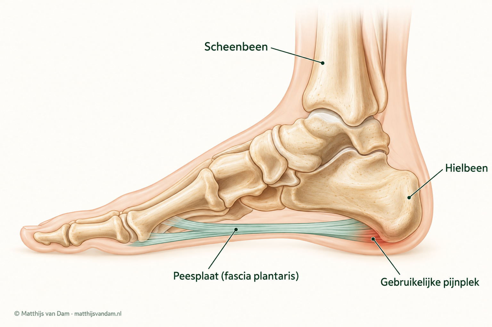
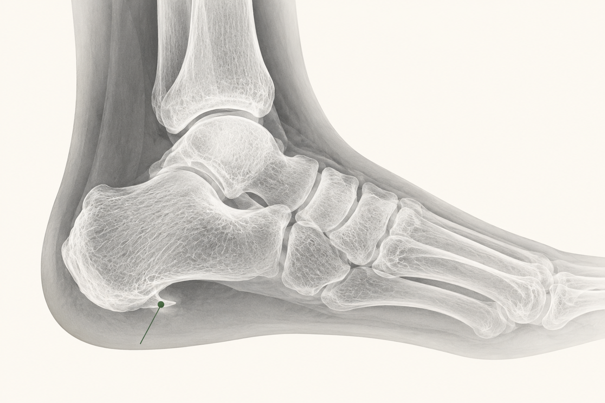

Wat is hielspoor?
Hielspoor is de naam die vaak wordt gebruikt voor pijn onder de hiel. Meestal zit de pijn rond de plaats waar de peesplaat aan de onderzijde van het hielbeen vastzit. De medische term voor klachten van deze peesplaat is fasciopathie plantaris.
De naam zegt niet precies waardoor de pijn ontstaat. Ook andere aandoeningen kunnen pijn onder de hiel geven. Daarom is vooral belangrijk waar en wanneer je pijn voelt en wat er bij onderzoek van je voet te zien is.
Wat zijn peesplaatklachten?
De peesplaat, ook fascia plantaris genoemd, is een stevige bindweefselplaat onder de voet. Deze loopt van het hielbeen naar de voorvoet. De plaat helpt de voetboog te ondersteunen en vangt krachten op wanneer je staat, loopt of afzet.

De pijn zit vaak op de plek waar de peesplaat onder het hielbeen vastzit. Je hoort hiervoor ook de naam "fasciitis plantaris". Die naam doet denken aan een ontsteking, terwijl dat bij langdurige klachten niet altijd de verklaring is. Daarom wordt ook de term plantaire fasciopathie gebruikt. Dat betekent: een aandoening van de peesplaat onder de voet. Die naam zegt niet dat er een ontsteking is.
De pijn kan veranderen door wat je op een dag doet. Dat betekent niet dat je iets verkeerd hebt gedaan. Lang staan, een verandering in sporten, schoenen, een harde vloer en de manier waarop je voet en kuit bewegen, kunnen allemaal meespelen.
Welke klachten kunnen erbij passen?
Veel mensen beschrijven pijn bij de eerste stappen na slapen of zitten. Na enkele minuten lopen kan de pijn soms wat afnemen, om later bij langer staan, wandelen, sporten of na belasting weer terug te komen. De pijn zit vaak onder de hiel of iets aan de binnen-onderzijde van de hiel.
Druk op de aanhechting van de peesplaat kan gevoelig zijn. Soms straalt de pijn wat door richting de voetboog. Klachten kunnen toenemen bij lopen op blote voeten, harde vloeren, weinig demping, snelle sportopbouw, heuvels, sprinten, springen of lang staan.
Wat kan het ook zijn?
Pijn onder de hiel kan verschillende oorzaken hebben. Daarom wordt ook gekeken wanneer de pijn ontstaat, wat de pijn uitlokt en wat bij onderzoek van de voet te vinden is.
Voel je een stevige knobbel onder de voetboog? Dan kan ook de ziekte van Ledderhose meespelen. Daarbij ontstaan knobbels in de peesplaat. Zit de pijn vooral midden onder de hiel, dan kan ook het vetkussen een rol spelen.
Een brandend gevoel, tintelingen of een doof gevoel kunnen wijzen op een zenuwprobleem. Ook pijn die steeds eerder tijdens het lopen begint of in rust aanwezig is, vraagt om een bredere beoordeling.
Een andere mogelijke oorzaak is een stressfractuur. Ook eelt, een likdoorn, een wrat, een wondje of iets dat in de huid zit, kan pijn onder de hiel geven.
Achillespeesklachten, Haglund- en slijmbeursklachten en diepe achterenkelpijn zoals posterieur enkelimpingement zitten meestal meer achter de hiel of achter in de enkel, maar kunnen door patiënten soms ook als "hielpijn" worden beschreven.
Ook de stand van je voet kan meespelen, zoals bij een verzakkende platvoet of een hoge voetboog. Verder kunnen een stijve kuit, klachten van een pees of zenuw, jicht of een ontstekingsziekte een rol spelen. Bij diabetes, verminderd gevoel, een wondje of tekenen van infectie is extra aandacht nodig.
Startpijn en aanhechting
Pijn onder of binnen-onder de hiel, vaak bij eerste stappen na rust.
Ledderhose
Een voelbare knobbel onder de voetboog kan een andere verklaring voor pijn zijn.
Andere oorzaak mogelijk
Pijn in rust, tintelingen, pijn na een ongeluk of pijn die bij lopen toeneemt, vraagt om breder onderzoek.
Onderzoek en beeldvorming
Tijdens een consult bespreek je waar de pijn zit en wanneer die begon. Is de eerste stap na rust pijnlijk? Wordt de pijn erger bij staan, lopen of sporten? Ook je schoenen, de ondergrond, eerdere hielklachten en wat je al hebt geprobeerd, zijn belangrijk.
Bij lichamelijk onderzoek wordt gekeken waar de hiel gevoelig is als erop wordt gedrukt. Ook de peesplaat, de voetstand, de beweging van je enkel en de lengte van je kuitspieren kunnen worden beoordeeld. Zo nodig worden ook de huid, het gevoel in de voet en je manier van lopen onderzocht.
Meestal is geen röntgenfoto, scan of echo nodig. Als niet duidelijk is waar de pijn vandaan komt, of als de klachten na een passende behandeling onvoldoende verbeteren, kan een echo helpen. Dat is dan meestal het eerste aanvullende onderzoek. Een röntgenfoto kan nuttig zijn als een probleem van het bot wordt vermoed, maar wordt niet gemaakt alleen om een hielspoor te zien.
Op een röntgenfoto kan soms een benige aanpunting onder het hielbeen zichtbaar zijn. Zo'n bevinding zegt op zichzelf niet of die de pijn verklaart.

Een MRI is soms nodig als de echo en het onderzoek niet bij elkaar passen, of als er een andere aandoening wordt vermoed die op een echo of röntgenfoto niet goed te zien is. Alleen het feit dat je al lang pijn hebt, is geen reden om standaard een MRI te maken.
Wat helpt meestal bij hielspoor?
Eerst kijk je samen met je behandelaar wat de klachten kan uitlokken en hoe je activiteiten kunt aanpassen. Oefeningen en schoenen die prettig zitten en bij je dagelijkse activiteiten passen, horen daarbij. Pijn betekent niet automatisch dat er iets beschadigd raakt. Het doel is om bewegen stap voor stap weer makkelijker te maken.
Kijk welke activiteiten pijn geven en hoe je staan, lopen, werk of sport geleidelijk kunt opbouwen.
Let op schoenen die prettig zitten en voldoende steun geven bij wat je dagelijks doet.
Dagelijkse rekoefeningen of opbouwende krachtoefeningen om de dag, gedurende minimaal 12 weken.
Een fysiotherapeut kan helpen bij de uitvoering, het volhouden en het aanpassen van de oefeningen.
Rekken of krachttraining: wat past het beste bij jou en wat kun je volhouden? Dat bepaal je samen met je behandelaar. De klachten kunnen in de loop van maanden afnemen. Hoe snel dat gaat verschilt; bij een deel blijft de pijn langer bestaan. Tijdens het oefenen mag je wat pijn voelen. Bespreek het als de pijn toeneemt of de oefeningen lastig vol te houden zijn.

Meer over de samenhang tussen kuitspieren, belasting en voetklachten lees je in het artikel over de kuitspier en voetpijn.
Sommige mensen proberen tape of inlegzolen om de voet tijdelijk te ondersteunen. Of zolen de pijn verminderen, is nog niet goed aangetoond. We weten ook niet of op maat gemaakte zolen beter helpen dan standaardzolen. Als je zolen overweegt, kijk dan met een deskundige naar de stand en beweging van je voet, het draagcomfort en de kosten.
Heb je vooral pijn bij de eerste stappen in de ochtend? Een nachtspalk of speciale reksok is dan soms een mogelijkheid. Die houdt de voet of tenen tijdens het slapen licht op rek. Of dat de pijn vermindert, is onzeker. Lees ook de uitleg van Thuisarts over behandelkeuzes bij hielspoor.
Heb je veel pijn en denk je aan pijnstillers? Bespreek met je huisarts of behandelaar wat voor jou geschikt is. Op deze pagina staat geen persoonlijk medicatieadvies.
Waarom kunnen klachten langer aanhouden?
Bij langdurige hielpijn is niet altijd één oorzaak aan te wijzen. Veel staan of lopen, pieken in werk of sport en schoenen die de pijn uitlokken kunnen blijven meespelen. Ook een verkorte kuitspier of een hoger lichaamsgewicht kan de belasting van de peesplaat beïnvloeden. Dat betekent niet dat deze factoren bij jou de pijn in stand houden. De richtlijn geeft geen duidelijk bewijs dat een hoger gewicht ook betekent dat klachten langer duren.
Wanneer komen shockwave of injecties in beeld?
Shockwave
Helpen uitleg, aanpassing van je activiteiten en oefeningen na minstens 12 weken onvoldoende? Dan kan shockwave een volgende optie zijn, als je deze behandeling voor dezelfde klachten nog niet hebt gehad. Bij shockwave worden geluidsgolven op de pijnlijke plek gericht. De richtlijn noemt maximaal drie behandelingen, eventueel naast oefeningen. De plek kan na afloop tijdelijk pijnlijk of gezwollen zijn. Bespreek ook de kosten en wat je van de behandeling kunt verwachten: herstel is niet gegarandeerd.
Injecties
Een injectie met een ontstekingsremmend middel (corticosteroïd) is meestal geen eerste stap. Als andere behandelingen en pijnstilling onvoldoende helpen, kan deze injectie soms worden overwogen. De pijn kan er tijdelijk door afnemen. Of je er ook beter door kunt lopen en of het op langere termijn helpt, is onzeker. Een scheur in de peesplaat, een infectie en dunner worden van de huid of het vetkussen zijn mogelijke complicaties. Volgens de richtlijn hoort een injectie samen te gaan met krachtoefeningen en gebeurt zij bij voorkeur met echogeleiding.
Een injectie met bloedplaatjesrijk plasma (PRP) is geen gebruikelijke eerste behandeling. Voor PRP wordt bloed van jezelf gebruikt. De richtlijn laat deze injectie pas als aanvullende mogelijkheid open wanneer behandelingen zonder operatie na meer dan zes maanden onvoldoende hebben geholpen. Er zijn aanwijzingen dat PRP pijn kan verminderen, maar het bewijs is van zeer lage kwaliteit. Hoeveel voordeel de injectie werkelijk biedt, is daarom onzeker. Mogelijke bijwerkingen zijn onvoldoende onderzocht. PRP wordt niet vergoed vanuit de basisverzekering. Bespreek daarom met je behandelaar of de mogelijke winst opweegt tegen deze onzekerheid en de kosten.
Wanneer komt een operatie in beeld?
Een operatie komt alleen in specifieke situaties in beeld. Volgens de richtlijn gaat het om mensen bij wie de kuitspier aantoonbaar verkort is en die na minstens één jaar passende behandeling zonder operatie onvoldoende zijn hersteld. Bij lichamelijk onderzoek wordt gekeken of de enkel anders beweegt met een gestrekte dan met een gebogen knie.
Voor hen kan een verlenging van de kuitspier een mogelijkheid zijn. De hielpijn kan na een operatie blijven bestaan. Er zijn ook risico's, zoals infectie, bloeding, trombose, schade aan een zenuw of een doof gevoel rond het litteken. Er kan ook langdurige pijn ontstaan met veranderingen in kleur, temperatuur of zwelling van de voet. De mogelijke verbetering en deze risico's worden samen afgewogen tegen verder behandelen zonder operatie.
Hoe bereid je een consult voor?
Het helpt als je kunt aangeven waar de pijn zit: aan de binnenkant, midden onder of achter de hiel, of ook in de voetboog. Bedenk wanneer je pijn voelt: bij de eerste stappen na rust, tijdens lang staan of sporten, op blote voeten of in bepaalde schoenen. Verandert de pijn in de loop van de dag?
Vertel ook wat je al hebt geprobeerd, zoals oefeningen, fysiotherapie, zolen, tape of injecties. Neem verslagen van eerder onderzoek mee als je die hebt. Meld ook aandoeningen zoals diabetes of reuma, een verminderd gevoel in de voet en eventuele wondjes. Sport je? Dan helpt het om te vertellen hoe je de training hebt opgebouwd.
Waar kan je terecht?
Heb je nieuwe klachten of nemen ze plotseling toe? Neem dan contact op met je huisarts; buiten kantooruren kun je zo nodig de huisartsenpost bellen. Bij het opbouwen van oefeningen, lopen of sporten kan een fysiotherapeut helpen.
Bij peesplaatklachten is een afspraak bij een orthopeed meestal niet meteen nodig. Je huisarts kan beoordelen of onderzoek door een specialist nodig is en je zo nodig via de gebruikelijke zorgkanalen verwijzen. Bij een verwijzing op mijn naam voer ik de beoordeling in principe zelf uit. De wachttijd kan daardoor soms langer zijn. Voor afspraken, planning, uitslagen en praktische ziekenhuisinformatie zijn de officiële ETZ-kanalen leidend.
Ben je al ergens anders onderzocht en wil je een tweede mening? Bespreek dat dan met je verwijzer. Die kan je ook daarvoor gericht naar mij verwijzen. Ik bekijk de klachten en het eerdere onderzoek opnieuw. Een tweede mening leidt niet automatisch tot een andere behandeling.
Veelgestelde vragen
Wat zijn peesplaatklachten?
Peesplaatklachten zijn klachten van de stevige bindweefselplaat onder de voet, vooral bij de aanhechting aan de onderzijde van de hiel. De pijn zit vaak onder of iets aan de binnenzijde van de hiel.
Is fasciitis plantaris hetzelfde als peesplaatklachten?
Fasciitis plantaris wordt vaak gebruikt als naam. In de praktijk gaat het niet altijd om een klassieke ontsteking, maar om irritatie of verandering van de peesplaat en de aanhechting. Daarom wordt ook de term plantaire fasciopathie gebruikt: een aandoening van de peesplaat onder de voet. Die naam zegt niet dat er een ontsteking is.
Is een hielspoor de oorzaak van pijn onder de hiel?
Hielspoor is de veelgebruikte naam voor pijn onder de hiel, meestal rond de aanhechting van de peesplaat. De naam zegt niet precies waardoor de pijn ontstaat. Het pijnpatroon, de precieze plek en lichamelijk onderzoek geven meer richting.
Welke klachten passen bij peesplaatklachten?
Vaak is er startpijn bij de eerste stappen na rust, pijn onder of aan de binnen-onderzijde van de hiel en pijn bij lang staan of lopen. Het patroon geeft richting, maar bewijst geen diagnose.
Gaat hielspoor vanzelf over?
Vaak wel, maar niet altijd. Bij veel mensen wordt de pijn in de loop van maanden vanzelf minder. Hoe lang dat duurt, verschilt per persoon. Bij een deel blijven de klachten langer bestaan. Wordt de pijn erger of neemt die niet af, bespreek dit dan met je huisarts.
Wat kan op peesplaatklachten lijken?
Een stevige knobbel onder de voetboog kan passen bij de ziekte van Ledderhose. Ook het vetkussen onder de hiel, een botprobleem en zenuw- of huidklachten kunnen pijn geven. Onderzoek helpt om deze oorzaken te onderscheiden.
Is beeldvorming altijd nodig bij pijn onder de hiel?
Meestal niet. Waar en wanneer je pijn voelt en het onderzoek van je voet geven vaak al veel informatie. Als de oorzaak onduidelijk blijft of de klachten na behandeling onvoldoende verbeteren, kan een echo helpen. Een röntgenfoto is niet bedoeld om alleen een hielspoor te zien. Een MRI is soms nodig als een andere aandoening wordt vermoed.
Wat helpt meestal bij hielspoor?
Meestal begint de behandeling met uitleg, het aanpassen van activiteiten en aandacht voor schoenen. Daarbij horen minstens 12 weken dagelijkse rekoefeningen of opbouwende krachtoefeningen om de dag. Samen met je behandelaar kijk je wat past en wat je kunt volhouden. De klachten kunnen in de loop van maanden afnemen. Hoe snel dat gaat verschilt; bij een deel blijft de pijn langer bestaan.
Zijn injecties, shockwave of operatie standaard?
Nee. Als uitleg en oefeningen na minstens 12 weken onvoldoende helpen, kan shockwave soms een volgende stap zijn. Een injectie is meestal geen eerste stap. Een operatie komt volgens de richtlijn alleen in beeld bij een aantoonbaar verkorte kuitspier en onvoldoende herstel na minstens één jaar passende behandeling zonder operatie.
Bron: Richtlijn Fasciopathie plantaris (17 februari 2026).
Deze pagina helpt om algemene onderwerpen te vinden. Zij sluit andere oorzaken niet uit en vervangt geen medisch consult. Bij persoonlijke medische vragen, acute ernstige klachten of spoed blijven de officiële zorgkanalen leidend.